Food diary polish
Two gaps on the phone's Food tab, both from a screenshot of a real week. A dish named in Chinese drops out of the handwriting into the phone's plain system face, and the diary can't leave the current week. This proposes a handwritten companion for Chinese, Japanese and Korean, with real renders to judge by eye, and one simple control to move between weeks.
The renders are the app itself, running in the simulator with a debug switch (-handCompanion) and sample meals titled in English, Simplified and Traditional Chinese, Japanese, Korean and mixed (-sampleFood cjk).
The week frames are drawn, in the app's own type, colors and words; nothing in them is built.
What James saw on Food, in the night look
Titles are drawn in Caveat, a handwritten face that has no Chinese, Japanese or Korean. iOS fills those characters in from PingFang, its plain UI face, at the same point size. Caveat's letters are small for their size (its x-height is 0.40 of the em), so the Chinese looks bigger, heavier and upright beside the slanted, light English. James: "I like the English font, can we find something similar to that."
The Diary shows the last seven days ("Nov 15 to 21 · 4 meals"), the week's grid and the day cards, and nothing earlier. The wall has Week and Month with arrows back as far as the diary goes. On the phone, last Tuesday's dinner is a Dishes search away, and a whole week can't be looked at again.
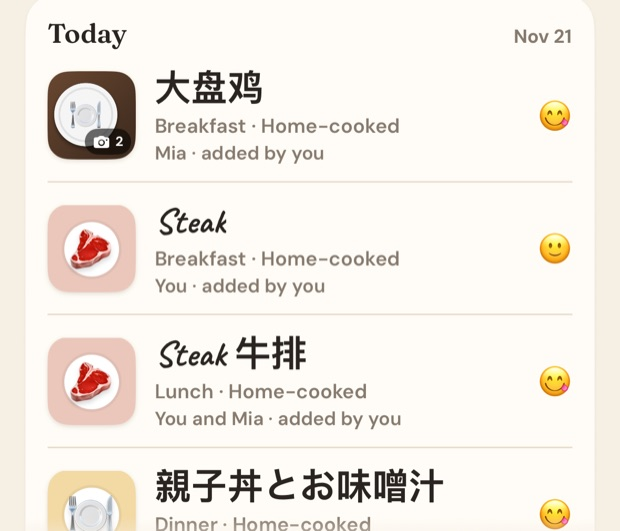
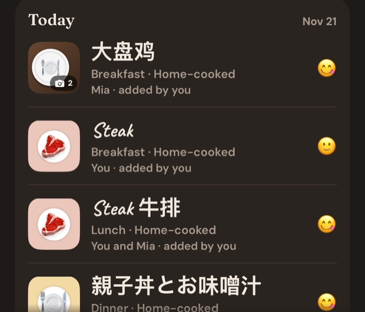
Three faces, and only the handwriting has the problem
Every face goes through one function, UIFont.variable(_:size:weight:) in Porchlight/Design/ThemeTokens.swift, so a fix there reaches every use on the phone and the wall at once.
The three are bundled (Fraunces, DM Sans, Caveat, all under the SIL Open Font License), registered by UIAppFonts for the app and the widgets.
| Face | Where it shows a user's words | Chinese, Japanese, Korean today | Verdict |
|---|---|---|---|
| Caveat (handwriting) | Meal titles in the phone's diary (PocketFoodScreen), the polaroid caption on a meal's page and the camera (PocketCamera, PocketSnap), the wall's week polaroids and month (FoodComponents, FoodWeekView), the wall's meal sheet (FoodViews), the sample handwriting (debug only). Not in any widget. | No glyphs at all: every character falls back to PingFang (Chinese), Hiragino Sans (Japanese) or Apple SD Gothic Neo (Korean), upright and heavy. | Fix: a handwritten companion. |
| Fraunces (serif display) | A dish's or a place's page title ("Steak 牛排"), "What we had", day headings with no user words. | PingFang Semibold. Its height matches Fraunces' large x-height and its weight matches 600; it reads as a deliberate pairing (render below). | Leave as is. |
| DM Sans (body) | Dish names in lists, the Dishes page, "New this week · 비빔밥 rated". | PingFang, Hiragino Sans, Apple SD Gothic Neo: sans beside sans, same weight. The system's own pairing. | Leave as is. |
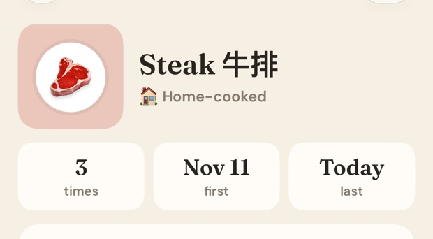
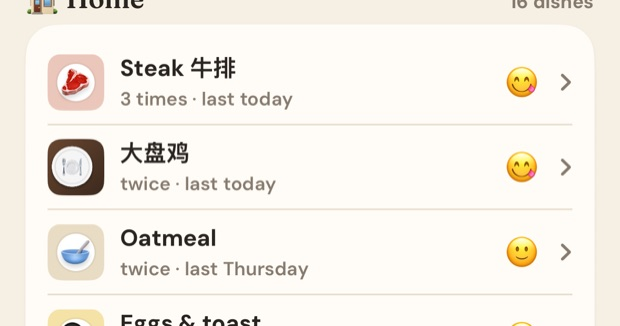
Handwritten faces with Chinese, and what each costs
Two kinds exist.
Apple's downloadable system fonts are licensed with iOS, cost no app size, and must be fetched once on the device through Core Text's font download (CTFontDescriptorMatchFontDescriptorsWithProgressHandler); they can't be bundled.
Open fonts under the SIL Open Font License 1.1 may be bundled in an App Store app, with the license text shipped, and a modified (for example subset) copy must drop the reserved font name.
None of the handwritten Chinese faces is preinstalled: in the iOS 17.5 and 27.2 simulator runtimes the only Chinese, Japanese and Korean faces present are PingFang, Hiragino and Apple SD Gothic Neo.
Apple's list (developer.apple.com/fonts/system-fonts) marks every Apple face below as "iOS downloadable".
Coverage was measured with Core Text on the font files themselves, against sample titles in each script.
| Face | Kind and license | Size | Simplified / Traditional / Japanese / Korean | Weights | Beside Caveat |
|---|---|---|---|---|---|
| Hannotate SC / TC (Apple) | iOS downloadable system font | 0 in the app; 81 MB download (both weights, SC and TC) | Yes / yes / kana and kanji, in Chinese forms / no | W5, W7 | The closest: a felt-tip marker, slightly slanted, W7's stroke matches Caveat 700. Upright enough to read at caption size. |
| HanziPen SC / TC (Apple) | iOS downloadable system font | 0; 69 MB download | Yes / yes / yes / no | W3, W5 | A fine pen, lighter than Caveat 700 even at W5: reads like a different writer. |
| Wawati SC / TC (Apple) | iOS downloadable system font | 0; 17 MB (SC) | Yes / yes / SC only / no | W5 | Round, childlike, thin: playful but light beside Caveat. |
| Kaiti SC / TC (Apple) | iOS downloadable system font | 0; 101 MB | Yes / yes / yes / no | Regular, Bold, Black | Brush calligraphy (楷书): formal, schoolbook. Handwritten, but not this hand. |
| Klee (Apple, Fontworks) | iOS downloadable system font | 0; 14 MB | Partly (6 of 13 sample characters) / mostly / yes, Japanese forms / no | Medium, Demibold | A pencil hand for Japanese. Misses common Simplified characters (鸡), so "大盘鸡" splits mid-word. Right for Japanese users only. |
| Nanum Pen Script (Apple) | iOS downloadable system font | 0; 7 MB (with Nanum Brush) | No / no / kana / yes | Regular | The Korean companion: a quick marker hand, close to Caveat. |
| LXGW WenKai (霞鹜文楷) | Open: SIL OFL 1.1 (github.com/lxgw/LxgwWenKai); embedding in apps allowed, OFL.txt must ship, "LXGW" reserved | 24 MB per weight (v1.530, TTF) | Yes / yes (TC variant for older forms) / kanji (based on Klee One) / Hangul syllables | Light, Regular, Medium | Klee One extended to Chinese: a neat pencil kaishu, thinner and more upright than Caveat. Not rendered yet (see decision 2). |
| Ma Shan Zheng, Long Cang, Zhi Mang Xing, Liu Jian Mao Cao | Open: SIL OFL 1.1 (google/fonts) | 4 to 6 MB each | Simplified only (Google's metadata lists "chinese-simplified" and "latin") | Regular | Brush and cursive hands; Traditional, Japanese and rarer characters would fall back mid-word. |
| ZCOOL KuaiLe, ZCOOL XiaoWei | Open: SIL OFL 1.1 (google/fonts) | 1.5 MB, 6.3 MB | Simplified only | Regular | Display faces (rounded comic, Song-like), not a handwriting. |
| Klee One | Open: SIL OFL 1.1 (google/fonts) | 8.7 MB per weight | Japanese only | Regular, SemiBold | The open twin of Apple's Klee; same gaps in Simplified. |
The same diary, with each companion
The phone is an iPhone on iOS 27.2; the wall is an iPad on iPadOS 17.5, as the kitchen iPad runs 17. Each companion is drawn at 0.88 of Caveat's point size so its characters stand as tall as Caveat's capitals (see "How it works"). On the wall, every cascade ends in Nanum Pen Script for the Korean ("비빔밥"); on the phone's diary there is no Korean title in view. Nanum Pen's Hangul draws small for its size: in these renders it is too small and too thin beside Caveat, and a larger factor for it alone didn't take in the trial (see "Size and baseline"). The wall has no night look (it is always light), so the wall is shown in light only.
Phone, light
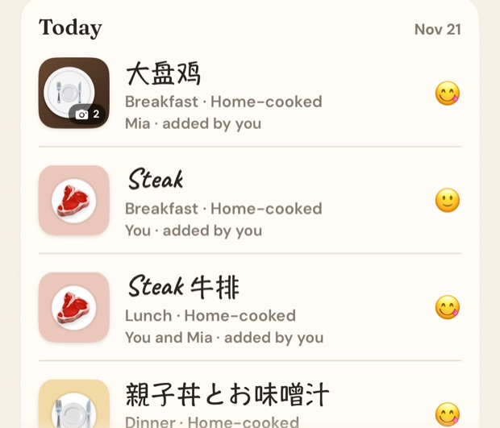
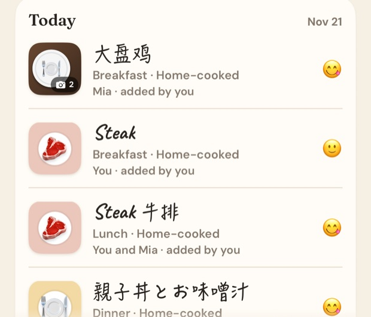
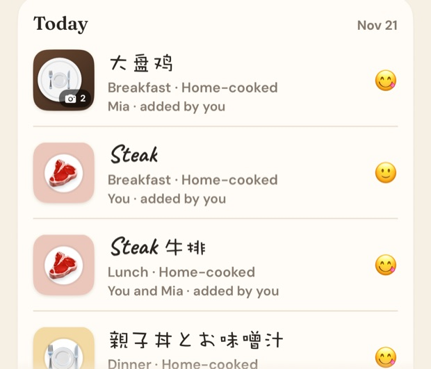
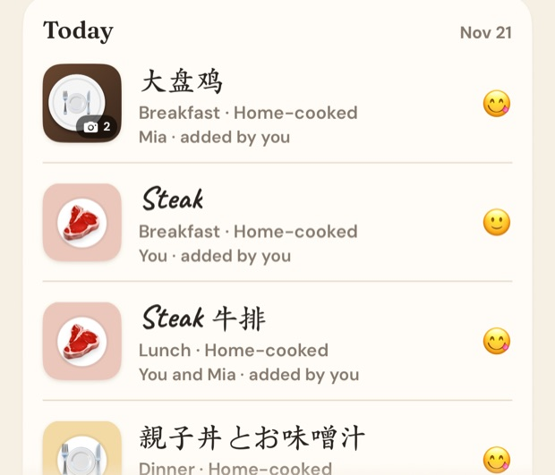
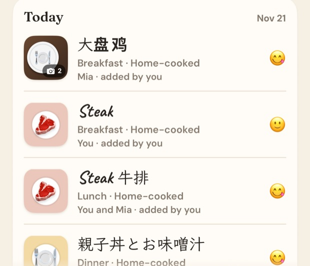
Phone, night
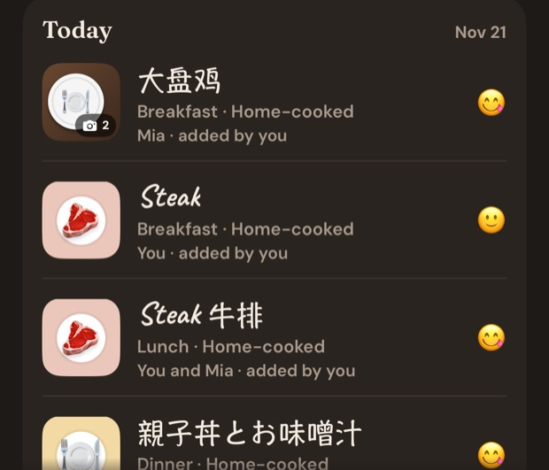
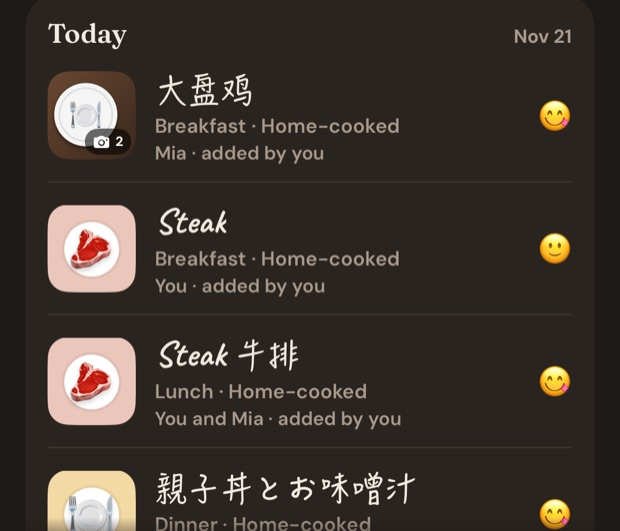
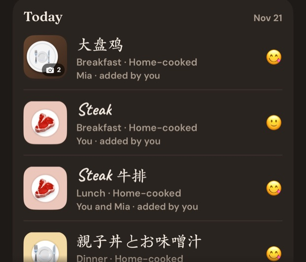
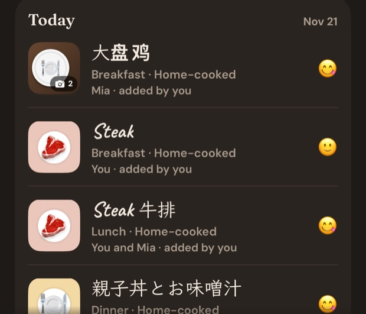
A meal's polaroid on the phone
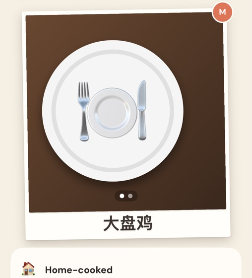
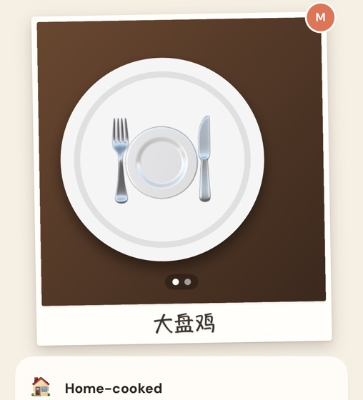
Wall polaroids (iPadOS 17.5), lunch and dinner rows

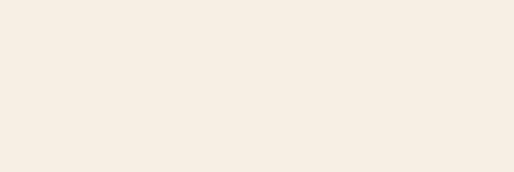
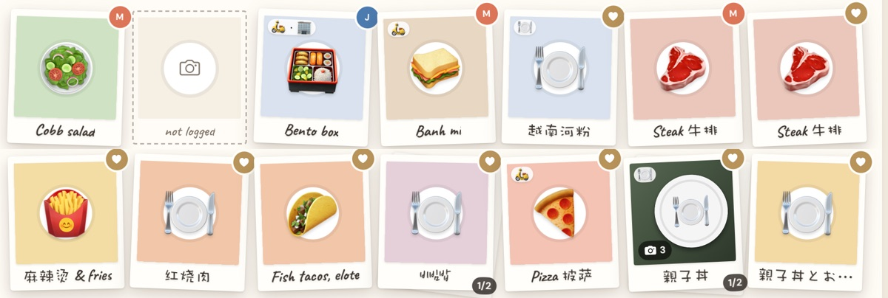
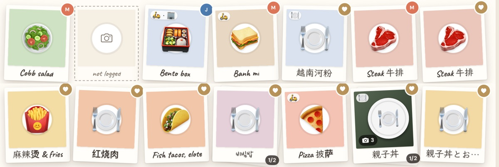
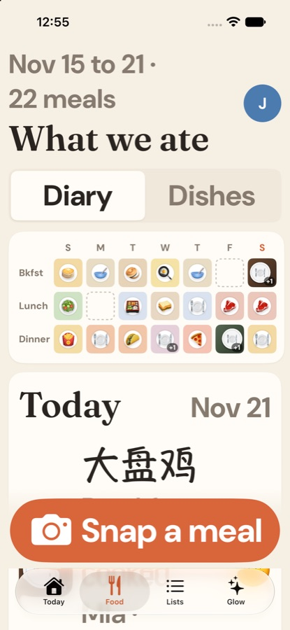
A cascade behind Caveat, fetched once, sized to match
Caveat's font descriptor gets a cascade list (UIFontDescriptor.AttributeName.cascadeList), so Core Text draws each character from Caveat if it can, and from the companion if not.
One change in UIFont.variable covers every handwritten title on the phone and the wall, and a mixed title like "Steak 牛排" stays on one line and one baseline, as the renders show.
Nothing else in the app changes: the serif and body faces keep the system's fallback.
Simplified Chinese and everyone else: Hannotate SC, then Nanum Pen Script. Traditional Chinese (zh-Hant first in the phone's languages): Hannotate TC first, for Taiwan and Hong Kong forms. Japanese (ja first): Klee Demibold first for Japanese kanji forms and kana, then Hannotate SC for what Klee lacks. Korean: Nanum Pen Script. The list is computed by a pure function from the preferred languages, and unit tested.
Each companion is drawn at 0.88 of Caveat's size, through a scale matrix on its descriptor, so its characters stand at Caveat's cap height instead of towering over the lowercase. The baseline is shared by Core Text; no line height changes, so polaroids and rows keep their height. Dynamic Type scales Caveat's size, and the companion follows. Korean needs its own, larger factor (Nanum Pen's Hangul is small for its size); in the trial a factor on the second face of the cascade didn't change its size, so if Core Text keeps ignoring it the build draws a title as runs by script, each run in its face at its size, instead of a cascade. Either way it is one function that every handwritten title goes through.
The app asks Core Text for the companion the first time it is about to draw a title in Chinese, Japanese or Korean (not at launch, so a household that never writes one never downloads anything). Until it arrives the system's fallback draws, as today; when it arrives, the screen redraws. Each later launch asks again, which costs no network once the font is on the device. The widgets show no handwriting, so they need nothing.
Caveat is drawn at a fixed weight (600 or 700), and the Bold Text setting doesn't change it today; the companion is chosen at the matching weight (W5 for 600, W7 for 700), so nothing changes there. Color comes from the text's style, so the night look is unaffected (renders above).
Hannotate covers Simplified, Traditional and Japanese kana and kanji (Japanese in Chinese forms); Korean goes to Nanum Pen Script. A character none of them has (a rare one, an emoji) falls to the system, as every character does today. No subsetting: every face is the whole font, so ordinary dish names never split mid-word.
One pager on the week's card: back, forward, and back to this week
A row at the top of the grid card: "‹ This week ›". Back steps a week at a time to the week of the household's first meal; forward stops at this week (the chevron is hidden there, not disabled). Away from this week, the label says how far ("Last week", "3 weeks ago") and offers "Back to this week". It is visible, one tap, works with VoiceOver and Switch Control as two buttons, and is the wall's control in a phone's shape.
Hidden until discovered, competes with taps on the grid's slots, needs a separate VoiceOver path anyway, and would be a second control for the same thing. The chevrons do all of it.
A sheet with the month's days dotted where meals were, to jump far back. Useful once a household has a year of meals; until then, Dishes search finds any meal by name, and the wall has Month. It can come later without changing the pager.
A month of 31 slots by three meals doesn't fit a phone's width as tiles; the wall's Month is a page of its own. The phone keeps one view, the week, and moves it.
The week is the same seven days the phone and the wall show today: the six days before today and today, then the seven before those, and so on, so "Last week" on the phone is "previous week" on the wall.
This week, a past week, an empty week, largest text, night
What each part of the page does away from this week
| Case | Behaviour | Why |
|---|---|---|
| Header line | "Nov 8 to 14 · 18 meals": it already names the shown week, and follows it. The pager's label names it relative to now. | One range on the page, not two. |
| How far back | To the seven-day week holding the household's first meal. With no meals at all, the back chevron is hidden. | Nothing to see before it; an endless run of empty weeks helps nobody. |
| Forward | Never past this week. Dinners planned ahead (MealPlan) belong to the dinner plan, not the diary, so there is nothing of the diary's to show ahead. | The diary records what was eaten. |
| An empty week | The grid with every slot dashed, then "Nothing logged Nov 1 to 7" and "Tap a slot to add a meal you remember." in place of the day cards. | An invitation, not an apology; the slots already log into their day. |
| A past day's empty slot | Opens Snap for that day and slot, as this week's empty slots already do (checked: the grid passes the day and slot to CaptureRequest). | Filling in a week after the fact is the point of looking back. |
| "Snap a meal" on a past week | Logs now, as its words say; after saving, the diary returns to this week so the new meal's ring shows where it went. The toast says where it went, as today. | The button's job is "now"; the week's slots are how to log into the past. |
| "On this day" | Shown on this week only. | It is about today, a year ago. |
| Opening a meal and coming back | The shown week stays. It returns to this week when the Food tab is tapped again, or when the app comes back after the day has turned. | Back should land where you were; a new day starts at today. |
| Dishes | Unaffected: the pager is part of the Diary, and Dishes keeps its own header line. | |
| VoiceOver | "Previous week" and "Next week" buttons, and the label as a header ("Last week, November 8 to 14, 18 meals"); "Back to this week" is a button. The label also takes the adjustable action (swipe up or down for a later or earlier week). The grid's label, "This week's meals" today, names the shown week. | The same control, spoken. |
| Largest text | The pager grows with Dynamic Type: the chevrons become 48 points at the ends and the label wraps between them. The grid itself stays capped at the xLarge size, as it is today (it is a picture of the week; every meal in it is also a row below at full size). | Frame 4. |
| Loading another week | The diary's meals are already in memory (FoodStore.snapshot); a week is seven filtered days. Photos load as thumbnails only, through PhotoImages, for the tiles and rows on screen, at most about 21 a week. | No new query, no whole shots. |
| Widgets and links | No widget shows the food diary, and the only links are porchlight://today and porchlight://lists; nothing assumes the diary's week. |
App size, licenses, sync
Recommended: none. Hannotate, Klee and Nanum Pen are fetched by iOS only on a device that shows such a title (Hannotate is an 81 MB download, once). The bundled alternative, LXGW WenKai, adds about 24 MB per weight to the app and to the widgets' extension unless shared.
Apple's downloadable fonts come with iOS and are used through Apple's documented font download; they are not redistributed. LXGW WenKai and the Google faces are SIL OFL 1.1: bundling is allowed, OFL.txt ships beside them as for Caveat today, and a subset copy must be renamed.
None. Both gaps are drawing and navigation only: no new field, record or schema.
What to approve
- The handwriting's companion is Hannotate (SC, or TC for Traditional readers), drawn at 0.88 of Caveat's size, fetched on demand.Alternatives: HanziPen (lighter pen), or a bundled LXGW WenKai (offline from the first launch, +24 MB).
- Before deciding 1, should LXGW WenKai be rendered too?That needs downloading LXGW WenKai Regular, 24 MB, from the project's GitHub release (lxgw/LxgwWenKai v1.530); I didn't download it without your yes.
- Japanese readers get Klee first, and Korean titles get Nanum Pen Script once it is sized to match.Until then, Korean keeps the system's Apple SD Gothic Neo.
- The serif and body faces keep the system's Chinese, Japanese and Korean (PingFang, Hiragino, Apple SD Gothic Neo).
- Week navigation is chevrons on the week's card with "Back to this week", and no swipe.
- "Snap a meal" on a past week logs now and returns the diary to this week.
- No month calendar on the phone for now.
Two changes, tests where docs/design/testing.md puts them
- Code: a
HandCompaniontype picks the cascade from the preferred languages and asks Core Text for the faces on first need;UIFont.variableadds the cascade to Caveat; titles redraw when a face arrives. The debug switch used for these renders goes away. - Unit: the cascade for Simplified, Traditional, Japanese, Korean and English readers; the size factor; that a mixed title draws from Caveat and the companion and nothing else (Core Text runs, with the face registered from the test bundle's copy of the system font, or skipped where absent); the fallback when the face isn't there.
- Hosted screen: the phone diary with
-sampleFood cjktitles, light, dark and largest. - UI: none; nothing here can go wrong only in the real app.
- Code:
PocketFood.week(endingOn:weeksBack:), the earliest week from the first meal, the pager row, the empty week, "On this day" on this week only, the return to this week after Snap and on a new day. - Unit: windows and bounds with the clock pinned and swept across the day and two time zones, a daylight-saving week included; every label ("This week", "Last week", "3 weeks ago") and the header line; the empty week's words; the return-to-this-week rules as flow state.
- Hosted screen: this week, a past week, an empty week, in light, dark, largest and largest-dark.
- UI: one journey in
PhoneFoodTests: back a week, open a meal, come back to the same week, fill an empty slot there, "Back to this week".
- food/diary-polish, from integration/next, after these decisions.
- The companion first (small, visible), then the weeks.
- Tests move as docs/design/testing.md says, on the tests/pyramid pattern (
HostedScreen).
What I couldn't check
- Which faces a real iPhone or iPad has preinstalled: I checked the iOS 17.5 and 27.2 simulator runtimes' font folders; Apple's list marks even PingFang "downloadable", so it isn't a reliable list of what ships.
- The font download itself on a device: its size there, how long it takes, and whether iOS keeps the face after a restart or under storage pressure. The renders register the Mac's copies of the same Apple fonts directly.
- LXGW WenKai's look: not rendered (decision 2). Klee is shown as a stand-in for its style.
- The phone's handwriting at the largest size in Japanese and Korean, and the wall's Month view with these titles.
- Why a size factor on Nanum Pen in the cascade had no visible effect while the same factor on the first companion did.